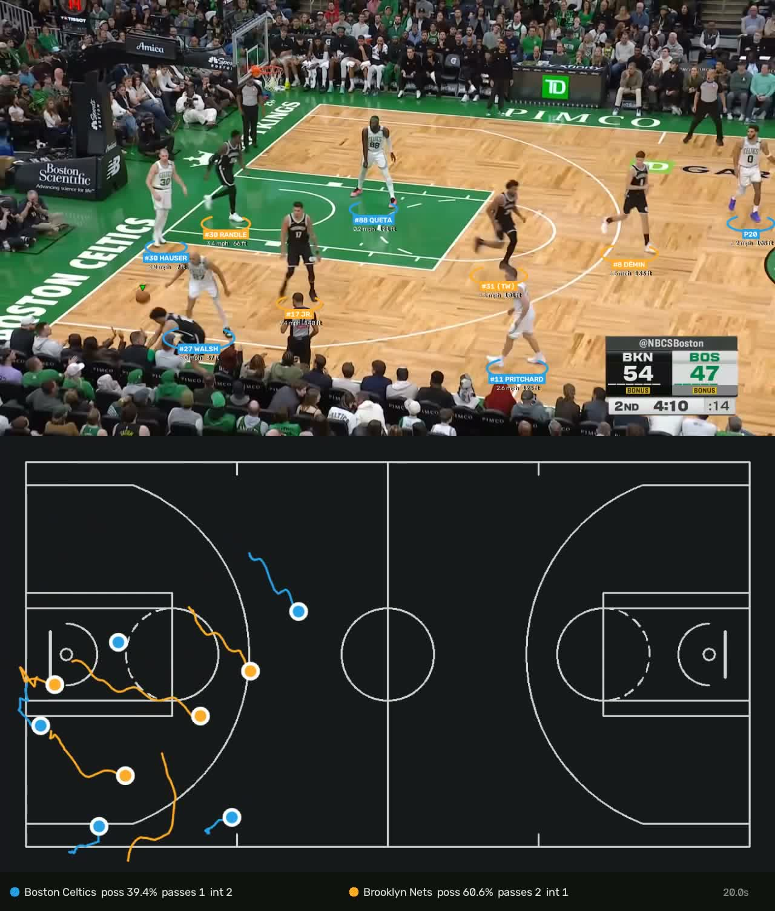
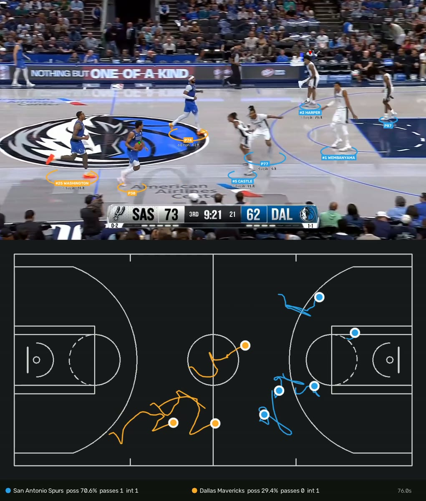
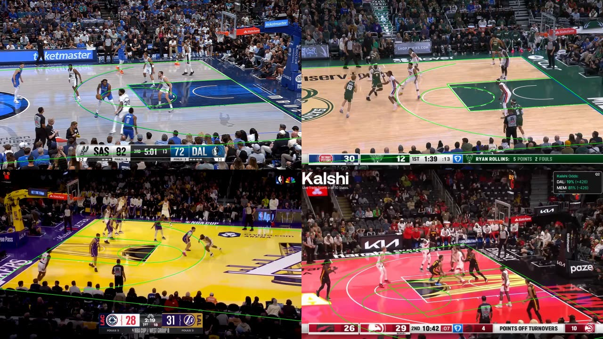
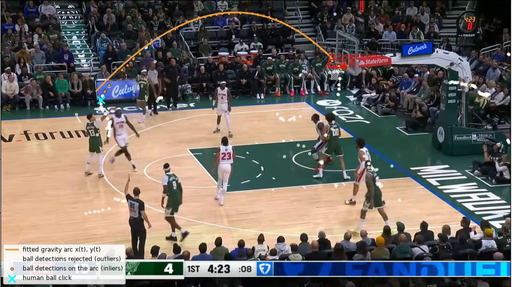
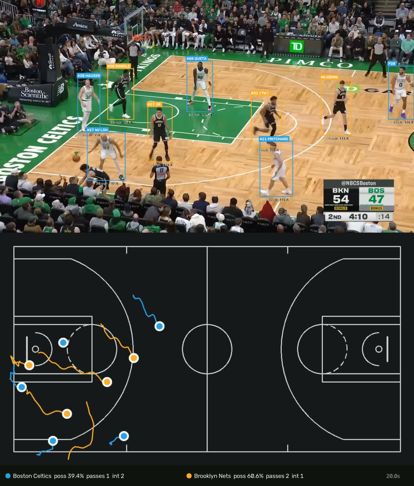
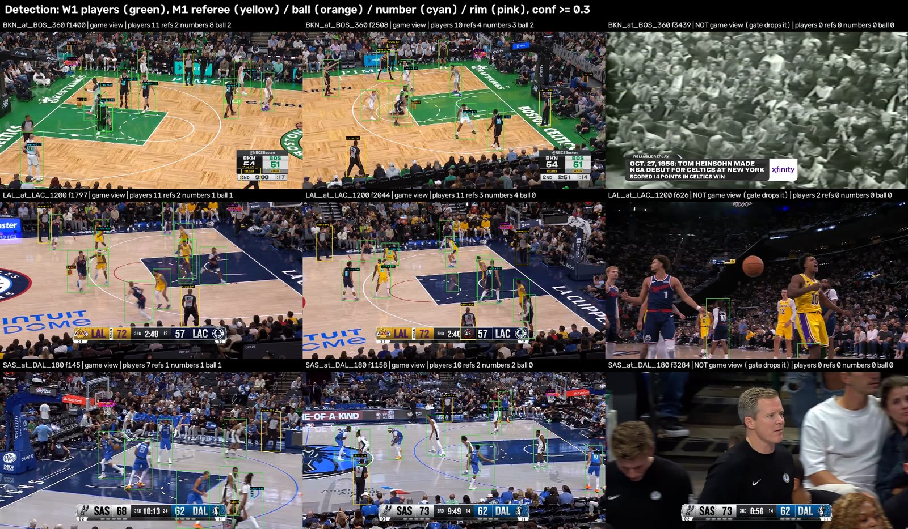
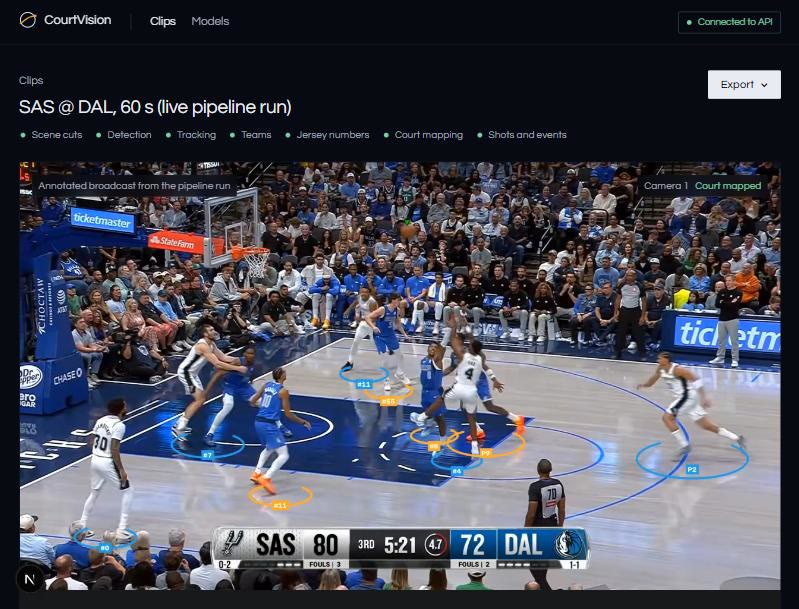

Computer vision · sports analytics · university semester project, in active development
CourtVision
A pipeline that takes one NBA broadcast clip and outputs tracked players with team, jersey number and name, positions in court feet, the ball, the score, and shots with their outcome, each stage measured against labels and the NBA’s official record.
- Python
- PyTorch
- YOLO11
- SAM 2
- TensorRT
- FastAPI
- Next.js
The problem
Ten vision tasks in a row
Broadcast video has camera cuts, replays, crowds and small, often hidden players and ball. Turning it into usable stats means chaining detection, tracking, clustering, OCR, re-identification, keypoints, homography and event detection, and measuring each one honestly.

The pipeline
From pixels to court feet
YOLO11m at 960 px fine-tuned on 3,232 images and 28,843 player boxes; a 10-class YOLO11s for referees, ball, rim, numbers and actions; RF-DETR tested and dropped.
BoT-SORT with camera-motion compensation, reset at every cut, and a ResNet-18 re-ID embedding that links tracks across cuts. SAM2.1 was the research tracker, too slow for production.
CIE-Lab colour histograms with k-means and Viterbi kit-switch cuts. SmolVLM2 reads numbers zero-shot, then a per-track vote is checked against the night’s roster.
YOLO11n-pose finds 33 court keypoints; a RANSAC homography with a 10 ft gate maps players onto the 94 × 50 ft court.
Ballistic-arc detection finds shots; a score-bug reader gives made or missed and aligns with the NBA play-by-play; a game-view gate drops replays and crowd shots.
Staged, cached runs write a results contract; FastAPI jobs and a worker serve it to a Next.js app with TensorRT engines and an LLM-written coach report.
Results
Every stage has a number
| Stage | Result |
|---|---|
| Player detection (W1) | Recall 0.972 on SportsMOT val; AP50:95 0.81 vs 0.62 for the 10-class model |
| 10-class detector (M1) | mAP50:95 0.462 ± 0.016 over 3 seeds, unseen arena |
| Tracking | HOTA 0.602 with BoT-SORT + GMC (ByteTrack 0.393) |
| Teams | 398 of 420 blind-labelled boxes; 0.993 on 300 labelled tracks |
| Jersey numbers | 59% of readable crops at 99% precision (digit head: 37% at 89%) |
| Court position | Median 0.695 ft, P90 1.444 ft on 127 test images from 3 games |
| Shots vs NBA record, locked games | 17 of 32 found; made/missed 17/17; 2 vs 3 points 15/17 |
| Speed | 226.7 s of compute per video minute (v1: 395.8) on an 8 GB laptop GPU |
| Data | 6.6 h of NBA film (41 videos, 21 games), 3,589 own labels |
Honest limits: shot detection finds about half of NBA shots, and layups and dunks are often missed; ID switches between same-kit players are not cut yet; the pipeline runs at about 3.5–4× real time.
Gallery
CourtVision in frames

Broadcast above radar
Court fit, four arenas
Shot arc
Box overlays
Detection across games
App, live run